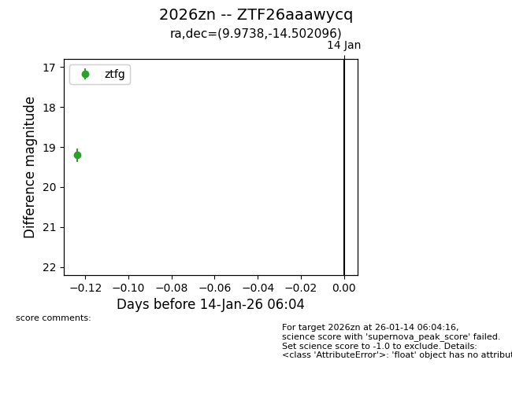
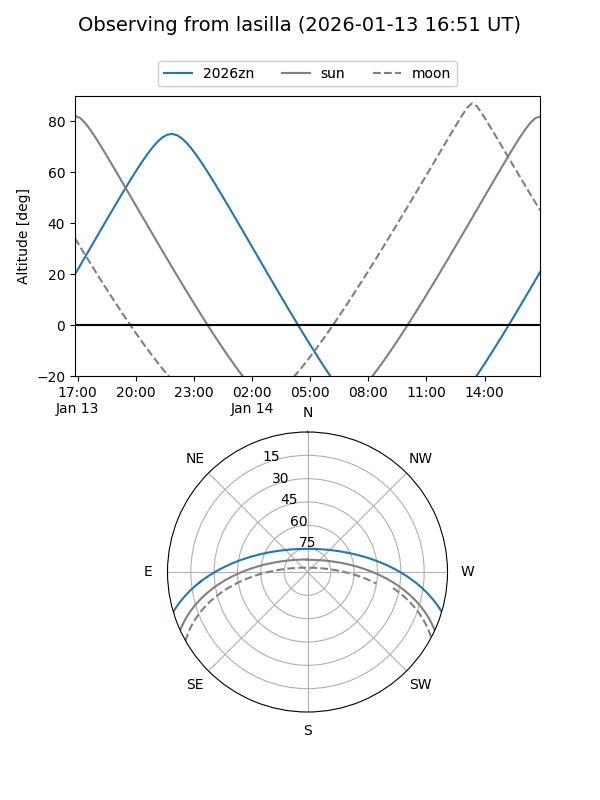
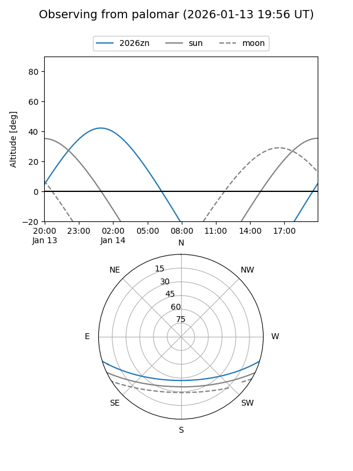

2026zn
Target 2026zn at 2026-01-14 06:05
Aliases and brokers:
FINK: link
Lasair: link
ALeRCE: link
TNS: link
YSE: link
alt names
ZTF26aaawycq (ztf,fink_ztf)
2026zn (tns,yse)
Coordinates:
equatorial (ra, dec) = 9.9738,-14.50210
equatorial (HMS+DMS) = 00:39:53.72,-14:30:07.55
galactic (l, b) = (110.3310,-77.09059)
Flags:
Photometry:
last ztfg=19.20
1 ztfg detections
Lightcurve

Visibility


Additional plots